Ürün aileleri
Sekiz ailede tüm ürün yelpazesi
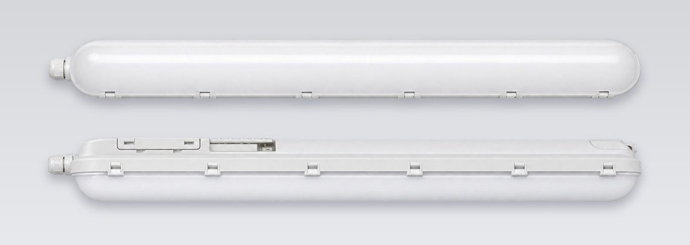
01LED Etanj Armatürler
OX LED Etanj, PRO LED Etanj, ECO LED Etanj, PLUS LED Etanj, Floresan Etanj, LED-Floresan Bağlantılı, Glob Armatür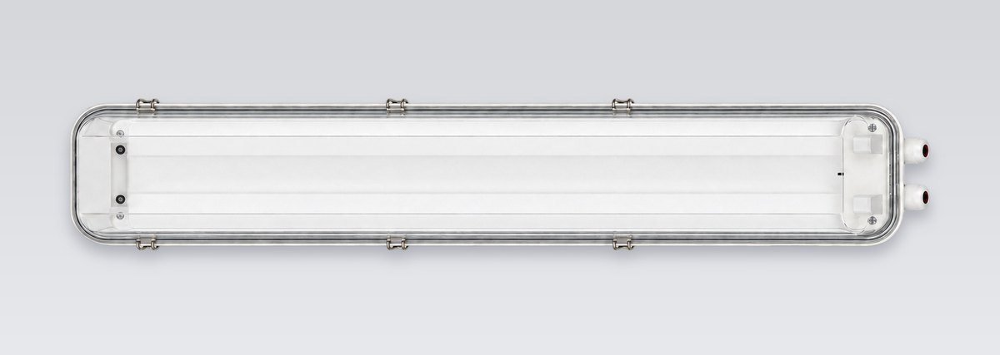
02Marine Etanj
Metal Marine Etanj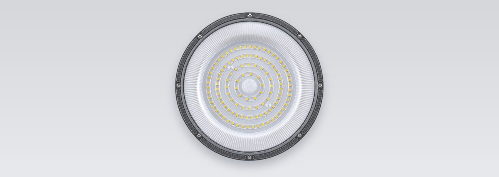
03Endüstriyel Armatürler
LED Bant, LED Prizmatik, LED Yüksek Tavan, UFO LED Yüksek Tavan- 04
Ofis ve İç Mekan
LED Linear, Backlight Panel, Sıva Altı Çerçevesiz Panel, Sıva Üstü Çerçeveler, Sensörlü Armatür 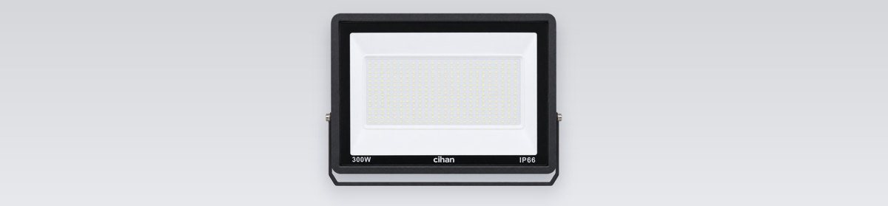
05Projektör ve Cadde
LED Projektör, Lensli LED Projektör, Cadde ve Sokak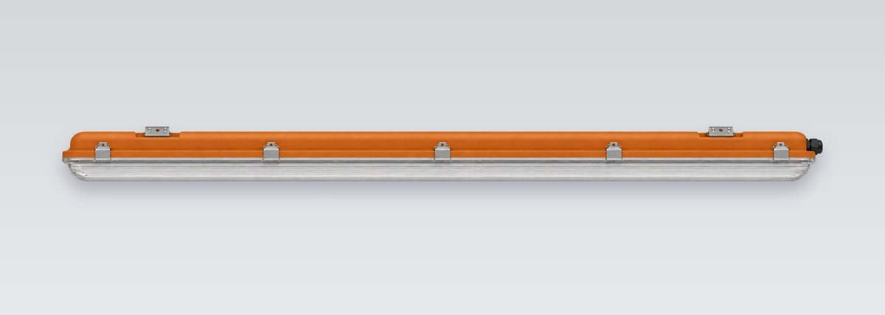
06Ex-Proof Armatürler
Ex-Proof Etanj, Ex-Proof Projektör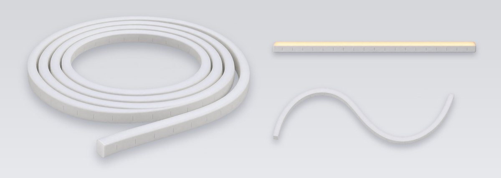
07LED Neon ve Şerit LED
LED Neon Hortum, Şerit LED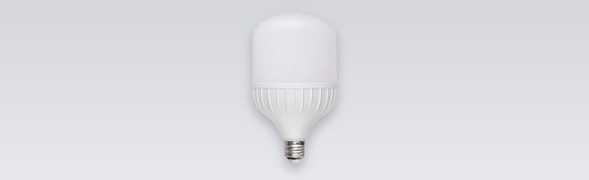
08Diğer Ürünler
Torch Ampul, Komponentler, Sensörler
Öne çıkan ürünler
Her alana uygun armatür

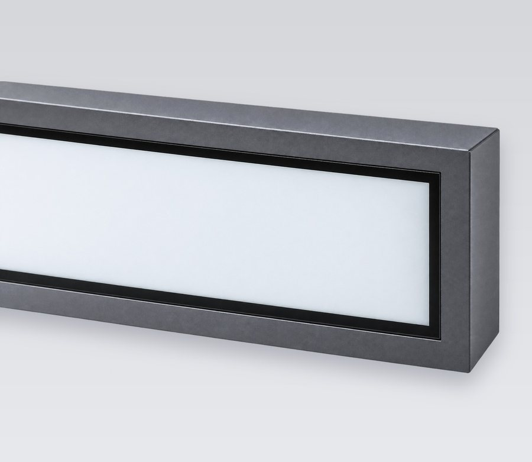
LED Yüksek Tavan Armatür
Geniş ve yüksek tavanlı alanlar için yüksek verimli ve dayanıklı bir aydınlatma çözümü sunar.
- Kullanım
- İç mekan
- Boyut
- 1200 x 160 mm
- Renk sıcaklığı
- 4000K / 6500K
- Işık açısı
- 150°
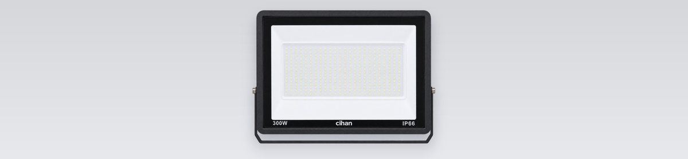
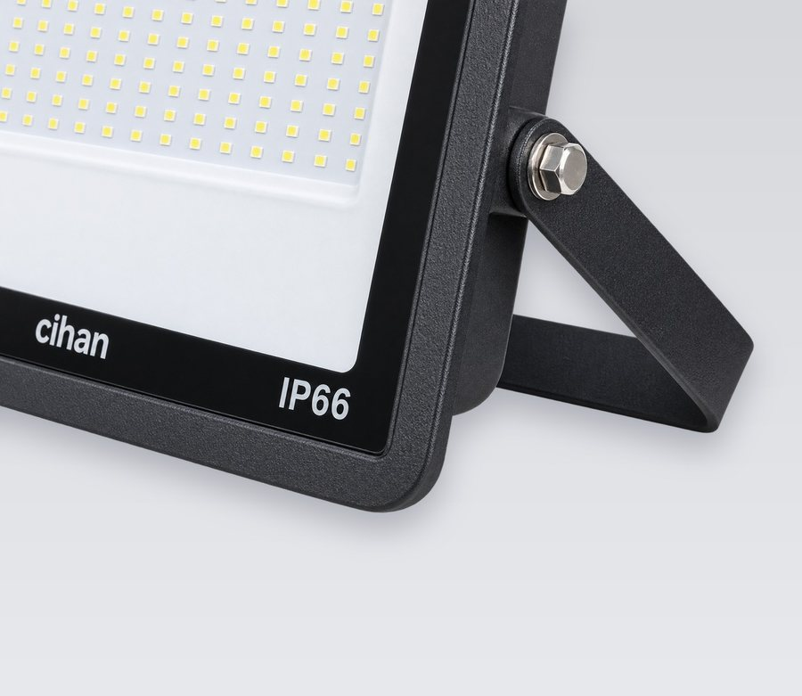
Cihan LED Projektör
Dayanıklı alüminyum enjeksiyon gövdesi ve güçlü aydınlatma performansı ile dış mekanlarda güvenilir bir çözüm sunar.
- Kullanım
- İç / dış mekan
- Renk sıcaklığı
- 6500K
- Işık açısı
- 120°
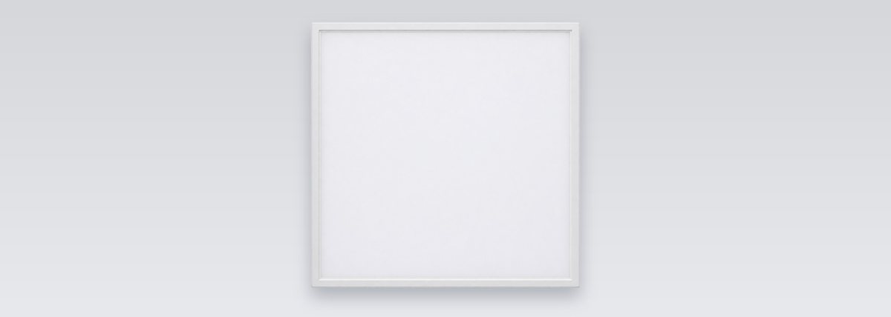
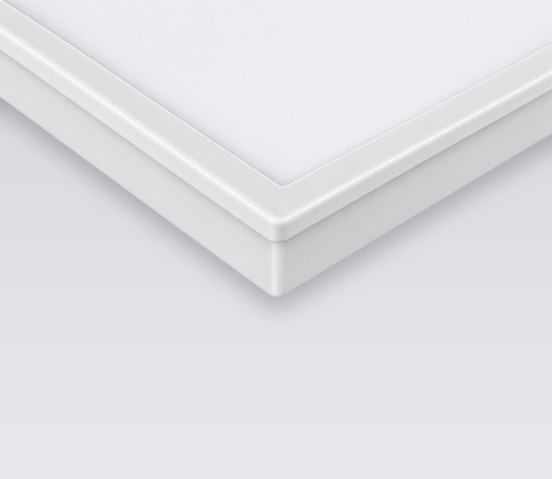
Backlight LED Panel
Yüksek verimli SMD LED teknolojisi ile geniş ve homojen aydınlatma sağlayarak iç mekanlar için modern ve enerji tasarruflu bir çözüm sunar.
- Kullanım
- İç mekan
- Boylar
- 30x30 / 30x60 / 30x120 / 60x60
- Renk sıcaklığı
- 4000K / 6500K
- Işık açısı
- 120°

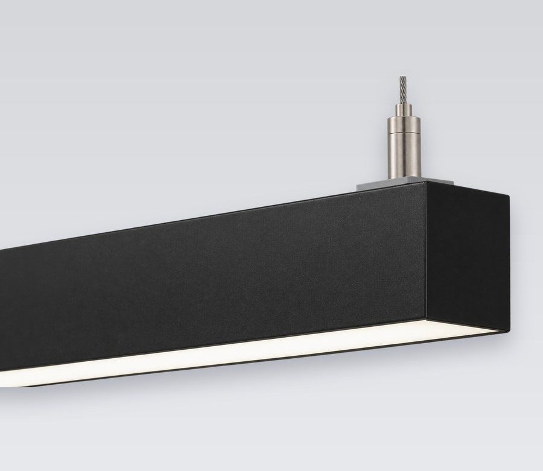
LED Linear Armatür
Modern tasarımı ve yüksek verimli SMD LED teknolojisi ile geniş alanlarda homojen ve güçlü aydınlatma sunar.
- Kullanım
- İç mekan
- Boylar
- 120 cm / 200 cm / 400 cm
- Renk sıcaklığı
- 3000K / 4000K / 6500K
- Işık açısı
- 160°

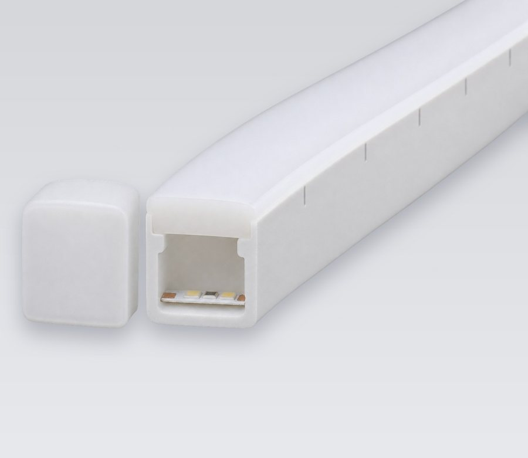
LED Neon Hortum
Esnek gövdesi ve noktasız, homojen ışık çizgisi ile mimari hatlarda, cephe ve tabela uygulamalarında, dekoratif aydınlatmada kesintisiz bir ışık hattı oluşturur.
- Modeller
- 6x12 (12-24V) · 8x16 (220V)
- Renkler
- 3000K / 4000K / 6500K / Amber
- Aksesuar
- Besleme kablosu, ara bağlantı, kapak, profil
Uygulama alanları
Mekâna göre doğru armatür
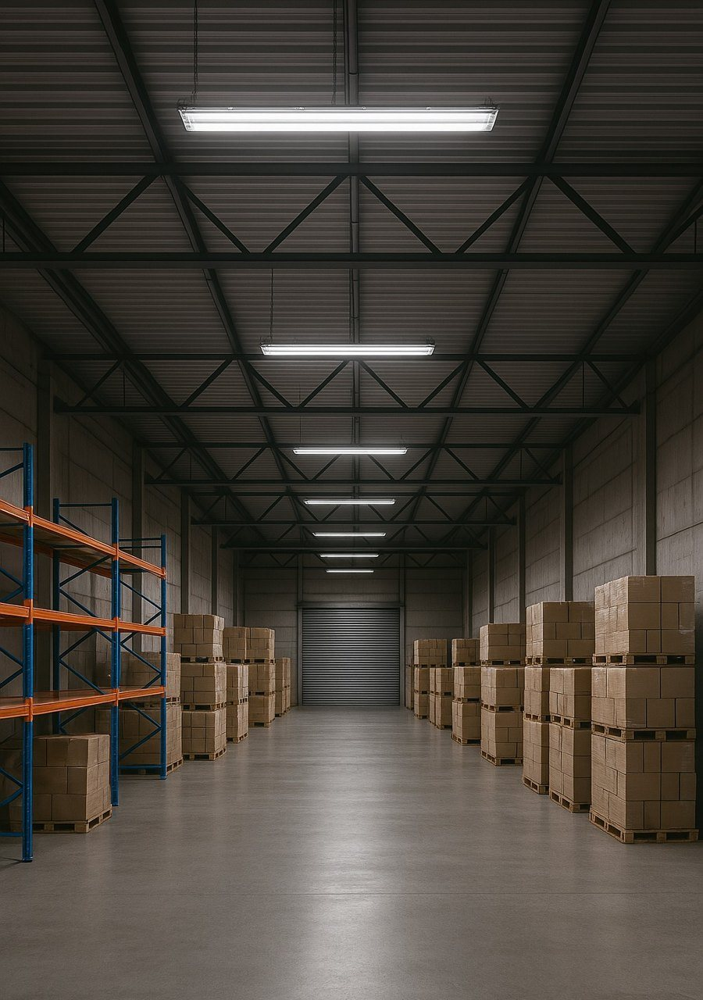
Fabrika ve Depo
Toz, nem ve uzun çalışma saatlerine dayanıklı armatürler.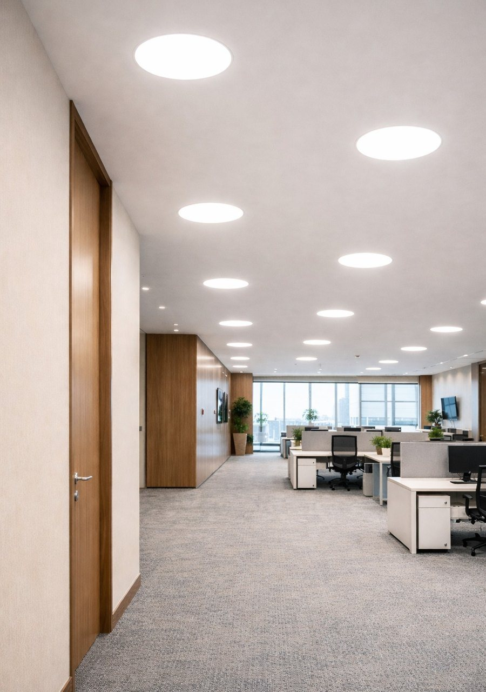
Ofis ve Mağaza
Tavan tipine göre gömme, sıva üstü ve çizgisel çözümler.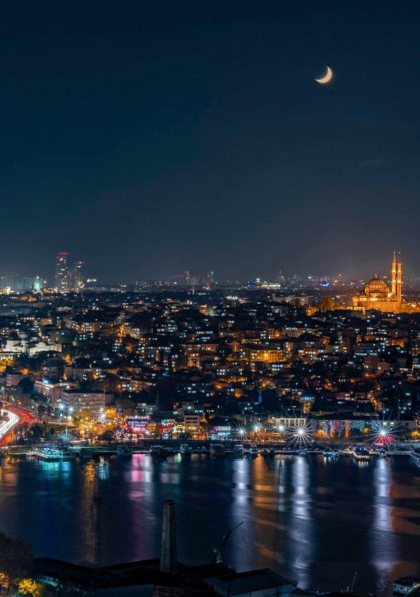
Dış Mekan ve Saha
Saha, cephe, otopark ve yollar için yüksek güçlü armatürler.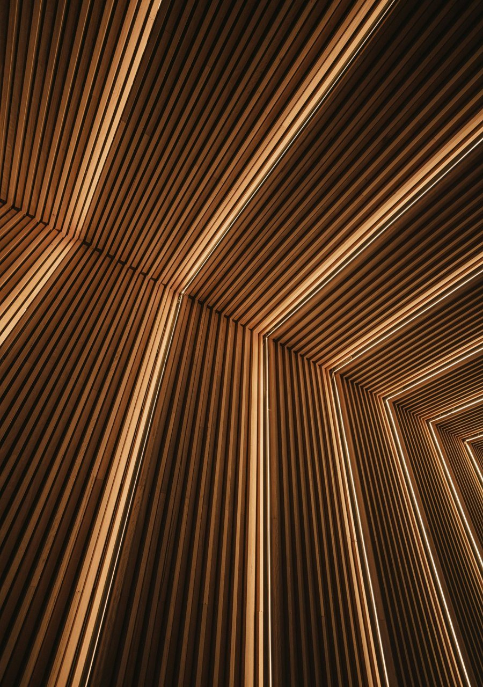
Mimari ve Dekoratif
Mimari hatları izleyen kesintisiz ışık çizgileri.
2027 Ürün Kataloğu
68 sayfada tüm ürün aileleri, ürün kodları, teknik tablolar ve ölçü çizimleri.